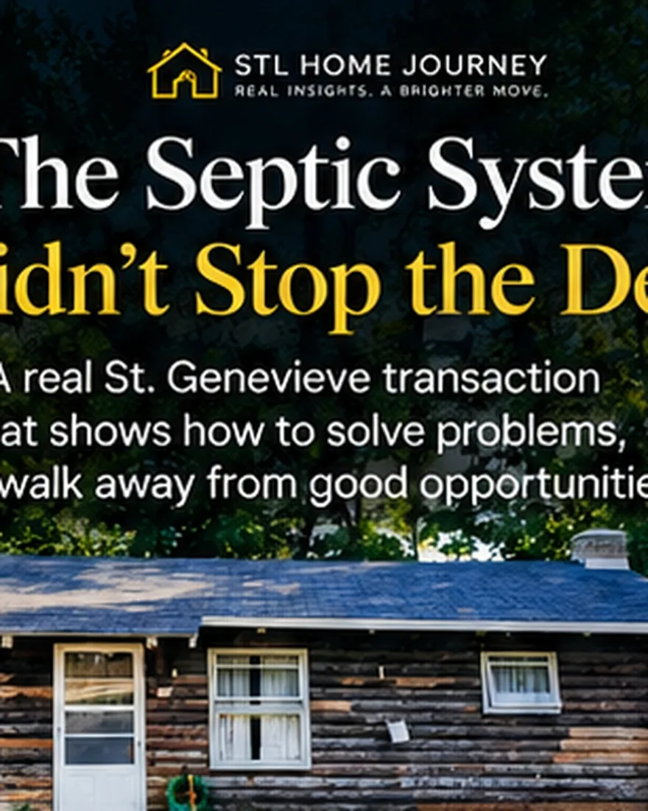
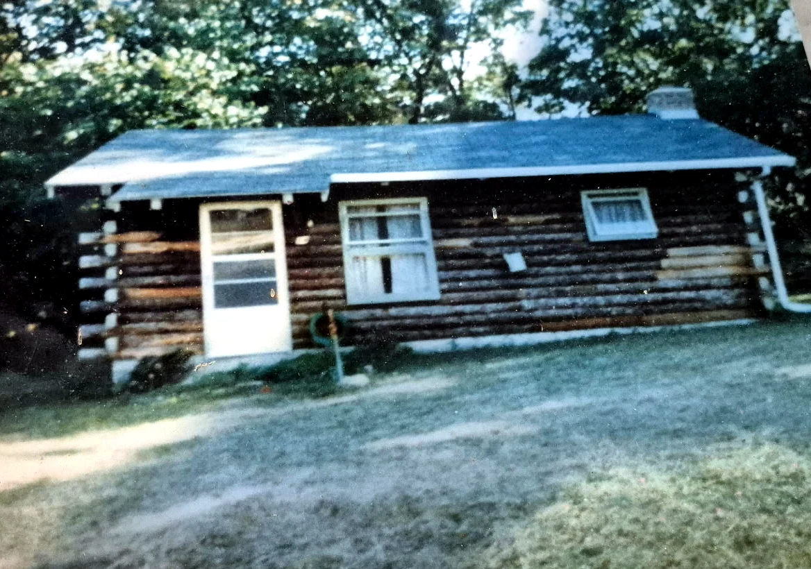
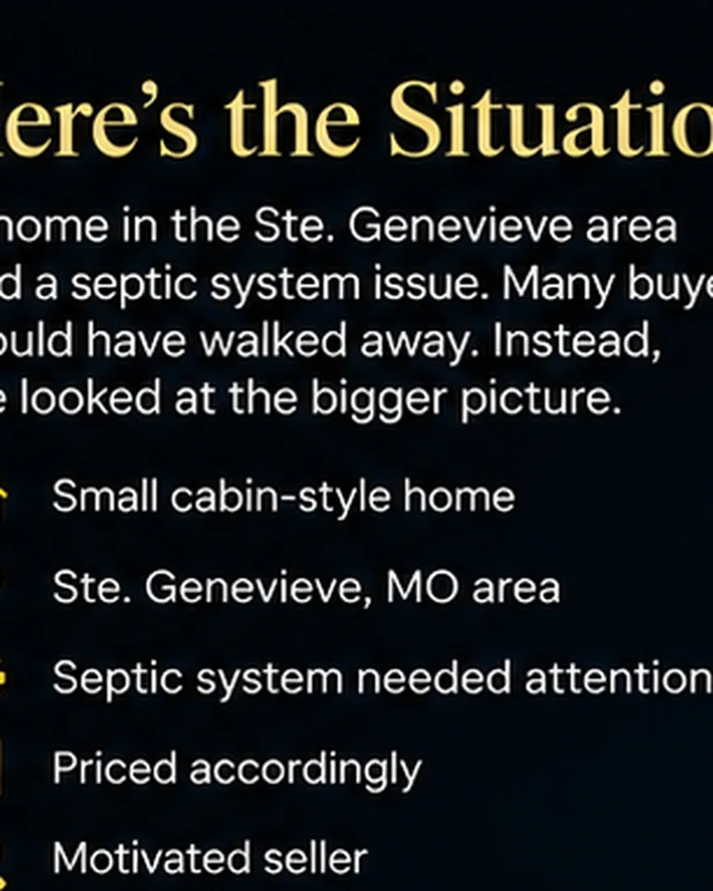
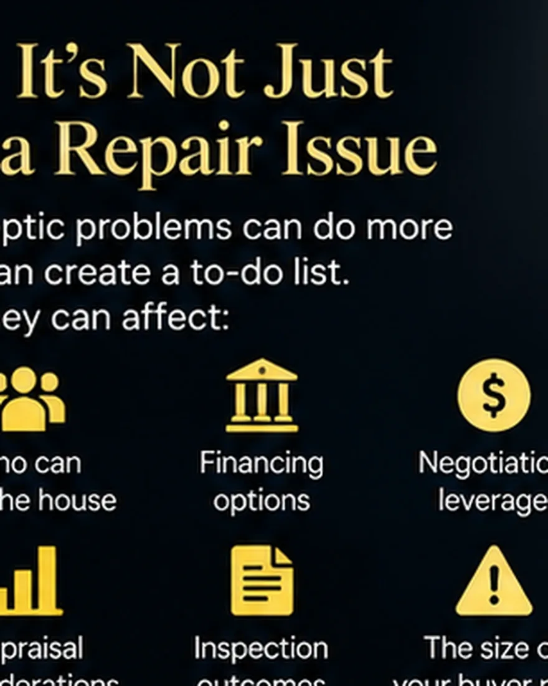
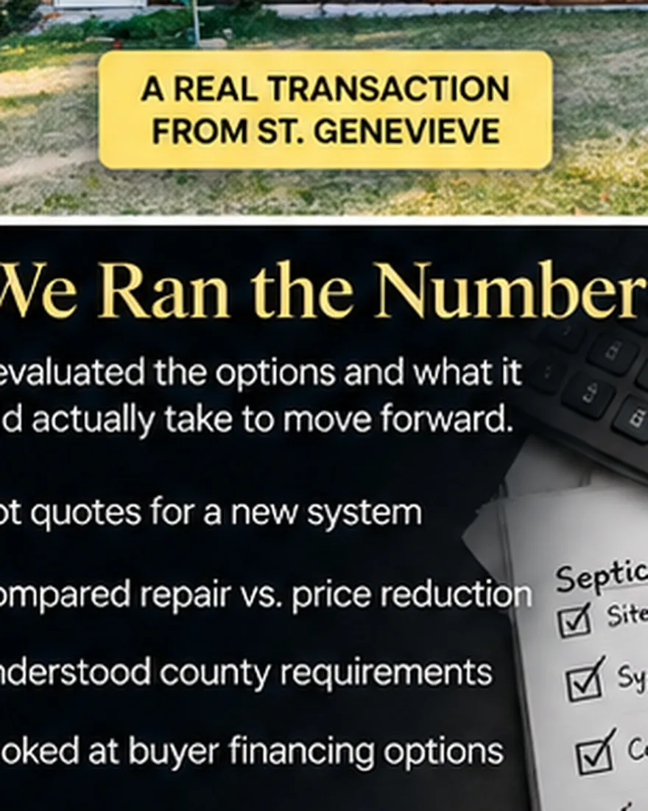
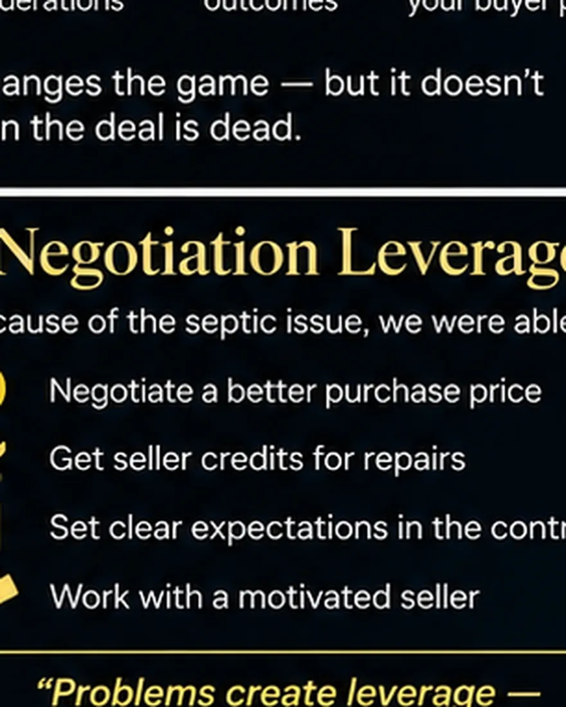
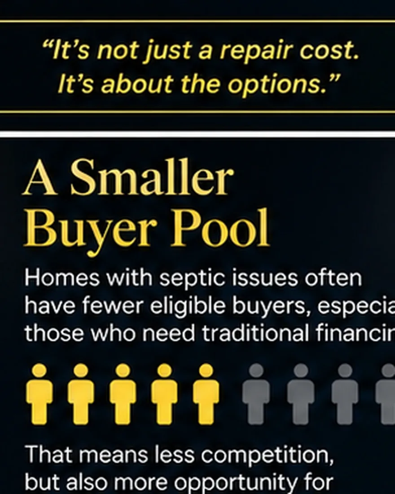
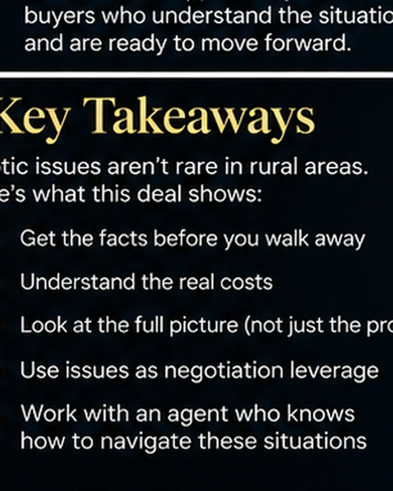

STL Home Buyer Journey
George Kindler
13 Years Of Real Estate Experience At Your Fingertips
Last updated September 9, 2026
My parents wanted a lake house. What looked like a simple 1970s cabin turned into a lesson in what happens to a property’s value when a defect doesn’t just cost money — it changes who is willing and able to buy. Step into my seat, make the calls, then read exactly how each one played out.

My parents found a lake house at Greyhawk Estates in Ste. Genevieve County: roughly half an acre, a cabin of about 1,000 square feet with one bedroom and one bathroom, an oversized detached garage, and a separate shed. It was built in the 1970s and had been held in an estate. On the surface, it looked like a pretty simple purchase.
It wasn’t. By the time we finished our inspections, the biggest question wasn’t how much is the septic going to cost? It was: if my parents don’t buy this property, who can? That question changed how I looked at the entire negotiation.

Here’s the short version. My parents were cash buyers with decades of experience buying and selling investment real estate, so they were unusually capable of accepting risk and solving a problem after closing. Once we understood the wastewater issue, we requested a $20,000 reduction. The sellers countered at $15,000. We declined and held at $20,000 — because the uncertainty hadn’t changed and we believed the property’s realistic buyer pool had become substantially smaller. The sellers ultimately agreed. After closing, my parents shopped the work without a deadline; their expected all-in cost landed around $16,000.

Before we even made an offer, I missed something. The property was already under contract — the existing buyer had a home-sale contingency with a kick-out provision, and that was noted in the agent remarks. I didn’t fully catch it before we went to see it. I should have. I’m not going to rewrite the story afterward to make every decision look perfect. Sometimes you miss something; the important part is what you do once you have the information. My parents still wanted the cabin — and their cash position gave the seller an alternative to a contract that depended on another property selling. So we decided to pursue it.
We saw one major risk before writing the offer. The cabin dated to the 1970s and had been held in an estate, and the wastewater system appeared likely to be original or significantly outdated. In my experience, older lower-priced properties on private wastewater deserve extra scrutiny. Before my parents wrote the offer, I told them the septic might be the biggest issue we’d encounter. There was another problem: if the system needed replacement, we weren’t necessarily going to know the exact cost during the inspection period. A septic replacement isn’t always like getting a bid to replace a furnace — it can require additional evaluation, design or permitting before a contractor can give a meaningful number. That’s the strange spot a buyer can reach: you know there’s a major problem, you know you’ll pay to solve it, but you don’t know what solving it will cost. That’s not just a repair. That’s risk.
When we met the septic inspector, the conversation went well beyond pass or fail. The existing setup was an older system that didn’t use a conventional drain field — it relied on treatment equipment before the wastewater was discharged. We learned about the history of wastewater systems in the Greyhawk community and why these older systems had become an issue. Most importantly, the condition of the system could have implications beyond paying for a repair: it could affect the property’s water service and practical habitability until the issue was resolved.

That changed my analysis. Before the inspection I thought we’re probably dealing with an expensive septic replacement. Afterward I thought we’re dealing with a property that needs someone willing and able to take responsibility for an unresolved wastewater problem before it can function the way a normal buyer expects a house to function. That’s a much bigger issue — and it’s why I stopped focusing only on the repair cost. We researched what a replacement might cost and understood the general risk, but we didn’t have a final contractor number during the transaction. So I started asking a different question: if my parents walk away, who’s the next buyer?
My parents initially offered $10,000 below asking. The sellers wanted stronger terms to replace their existing contingent buyer: list price, cash, quick closing. We agreed — but we kept our inspection protections. That distinction matters. Being a strong buyer doesn’t mean accepting every possible risk. My parents could give the seller certainty on the things we controlled — the cash, no home to sell, a fast close — without giving away our ability to investigate a roughly 50-year-old wastewater system we couldn’t. That decision became incredibly important.

The estate wasn’t in a position where we expected them to simply install a new system before closing. So if the property required correction before financing could proceed, that could be a serious obstacle for a financed buyer. My parents didn’t have that problem — they could close with cash and deal with the septic afterward. That made them more valuable to the seller. But it didn’t mean they should take the risk for free.
Once we understood the problem, we requested a $20,000 reduction. The sellers came back at $15,000. We said no — and this is important: we didn’t reject $15,000 to squeeze another $5,000 out of the seller. We rejected it because nothing about the risk had changed. We still didn’t know the final cost. We were still accepting responsibility for solving the problem. And we still believed that if my parents walked, the seller’s alternatives weren’t necessarily better.

Negotiating leverage isn’t just I found something wrong, so give me money. The better question is: what happens if we can’t reach an agreement? If my parents walked, the septic problem didn’t walk with them — the sellers still owned it. Their previous buyer might have accepted the problem after their own due diligence, or might not have. But that buyer would face essentially the same question: do we have the money and willingness to take this on? If they didn’t proceed either, who was next? Potentially an investor — and that’s where the economics could get considerably worse for the seller. So we held at $20,000. And we had to be willing to lose the property over it. That’s the part of “holding firm” people leave out: if you’re not actually willing to walk away, you don’t have the leverage you think you have. The sellers ultimately agreed.
This wasn’t a conventional three-bedroom suburban house with a huge pool of buyers. It was a small lake cabin in Ste. Genevieve County — about 1,000 square feet, one bedroom, one bathroom. That doesn’t make it a bad property; it just means the person looking for it is already more specific. Now add an unresolved wastewater problem. The realistic buyer needs some combination of: cash or financing that can handle the condition, additional money to solve the problem, enough knowledge to understand the risk, enough tolerance for uncertainty, the willingness to deal with the repair after closing, and enough desire for this particular cabin to make it all worthwhile. Every added requirement makes the pool smaller.

Most people aren’t looking for a construction project when they buy a house. By the end of a purchase, most buyers want something simple: close at the end of the week, move in over the weekend, get back to relative peace. That’s not the product being offered here. This buyer wasn’t just getting a lake cabin — they were getting a lake cabin plus an unresolved wastewater problem plus an uncertain cost plus the responsibility for solving it after closing. That appeals to substantially fewer people.
An investor would look at this very differently than my parents did. My parents wanted to own the cabin; an investor needs to make money from it. An investor doesn’t just calculate purchase price plus $16,000 septic. They’re weighing the correction, an unknown-condition contingency, other repairs, taxes, insurance, utilities, cost of capital, carrying time, transaction and selling costs, resale risk, and required profit — and then they need another buyer for a specialized one-bedroom lake cabin when they’re done. That risk requires margin. My parents didn’t need that margin, because they weren’t flipping it — they actually wanted the cabin. So they could rationally pay more than an investor might, while still demanding compensation for taking on the septic. That’s why $20,000 was a reasonable place to hold.
Once my parents owned the property, the situation changed. Now they had time — no inspection deadline or closing date forcing every decision immediately. They could work through the process and shop contractors. Ultimately they expect to be all-in for about $16,000. We negotiated $20,000. The difference is roughly $4,000 — and because they bought with cash, that’s actual capital they retained rather than $4,000 off a mortgage balance.
But I don’t view this as “we beat the sellers by $4,000.” That’s not what happened. My parents agreed to accept a problem whose final cost wasn’t known, and the sellers compensated them for assuming that uncertainty. The eventual number could have been lower, could have matched $20,000, or could have been higher. Fortunately it came in less. That’s the nature of taking risk.
This is one of the most useful lessons from the transaction. Inspection negotiations don’t always work as repair costs $X, seller reimburses $X. Sometimes new information changes how you value the property. When my parents agreed to pay list price, they did so on the information we had. Then we learned more. The physical property hadn’t changed — our understanding of it had. We now knew the buyer would have to accept a significant wastewater problem and an uncertain correction cost, so we reevaluated a reasonable price. That’s one of the purposes of due diligence: replacing assumptions with information before you’re fully committed.
A defect can cost more than the repair when it eliminates buyers. Suppose a house has a problem that ultimately costs $16,000 to correct. It’s tempting to conclude the problem reduced value by $16,000. Not necessarily. If a problem makes financing harder, some buyers disappear. If it needs significant cash right after closing, more disappear. If solving it means engineers, permits and contractors, some won’t want the headache. And if the final cost isn’t known, the buyer has to accept that it could come in higher. The repair has a cost. The uncertainty has a cost. And shrinking the buyer pool has a cost.

Picture two versions of the same property. In one, the seller has already investigated the problem — the solution, the requirements and the price are known, maybe the work is even done. In the other, the buyer discovers it during inspections, the fix isn’t finalized, the cost isn’t known, and the buyer inherits it. Those aren’t the same product. The second one isn’t transferring a repair bill — it’s transferring uncertainty. That doesn’t mean sellers should fix every major issue before selling; sometimes there’s no money for it, sometimes the economics don’t justify it, and sometimes as-is is exactly right. But understand this: an unresolved $16,000 problem can cost more than $16,000 if the uncertainty around it eliminates buyers.
My parents made this work because the problem fit their capabilities — cash, ~30 years of investment experience, comfort with contractors, money available after closing, a long-term reason to own, and tolerance for an uncertain repair process. Another buyer could look at the exact same property and rationally decide to terminate. A good real-estate decision isn’t would someone else buy this? It’s does this particular property and its particular risks make sense for me? Change the buyer and you can change the right answer.
I’d investigate the wastewater situation earlier. We correctly identified the septic as the biggest likely risk before writing the offer — but we didn’t understand the larger regulatory and practical significance of that particular system and community until the inspection. I’d want that information sooner next time. The lesson I’m carrying forward isn’t “old septic = don’t buy.” It’s: on an older property with private wastewater, understand the system, the applicable requirements and the consequences of failure as early as possible.
Most of what I write about is St. Louis, and this transaction happened farther out. I’m including it because the lesson travels. This isn’t only a far-out-county issue: about a quarter of Missouri homes run on private wastewater systems instead of public sewer, and the share rises away from municipal service areas — including the rural edges of St. Louis County and much of Jefferson and Franklin counties. And even if you never buy a house on septic, the principle applies to foundation movement, a private well, a failed retaining wall, a roof creating insurance problems, or any condition that complicates financing. The question isn’t always just what will this cost to fix? Sometimes it’s: how certain is that number? Can the property still be financed? Who has enough cash to solve it? How many buyers will accept the inconvenience? What happens if I walk away? And ultimately — who is the next buyer? Sometimes that tells you more about your leverage than the repair estimate does.
Is a property defect only worth the cost of the repair?
Not necessarily. The repair cost is only one part of the equation. A defect that makes financing harder, requires significant cash after closing, involves engineers, permits and contractors, or carries an unknown final cost can shrink the pool of buyers able to purchase. When a defect reduces demand, that can affect value beyond the repair bill.
Why does a cash buyer have an advantage on a home with a failed septic?
A cash buyer can close and resolve the problem afterward on their own timeline. A financed buyer often cannot: government-backed and conventional loans require a functional, sanitary system at closing, so a failing or noncompliant system frequently has to be corrected — and sometimes certified — before the lender will fund. That removes many buyers, which is part of why cash carried extra leverage here.
Can you get a mortgage on a house with a failed or noncompliant septic system?
Usually only after it’s resolved. Loans don’t ban private systems, but FHA, VA and conventional financing all require a functional, sanitary system at closing. If an appraiser observes failure or surface malfunction, the problem typically must be repaired — and sometimes certified by the local health authority — before the loan can close. Rarely impossible, but usually correct-first.
Does a price reduction for a defect equal the repair cost?
Not always. An inspection negotiation isn’t automatically a dollar-for-dollar repair reimbursement. When new information changes how you value the property — an unresolved problem with an uncertain final cost that the buyer must take on — you may reasonably reprice for the risk, not just the estimated repair.
More in this series: Lessons From a Sale · Related: Price reductions after inspection · What it costs to sell · Know your number first: buying power calculator · What happens at inspection · How repair costs affect price · How cash buyers calculate offers · Property condition & VA financing

Grew up in South St. Louis, lived in Dogtown for 6 years, now in South County. You’ll find us at Wellspring on Lindbergh on Sundays. I'm not selling you a house — I'm showing you how to think about buying or selling a house.